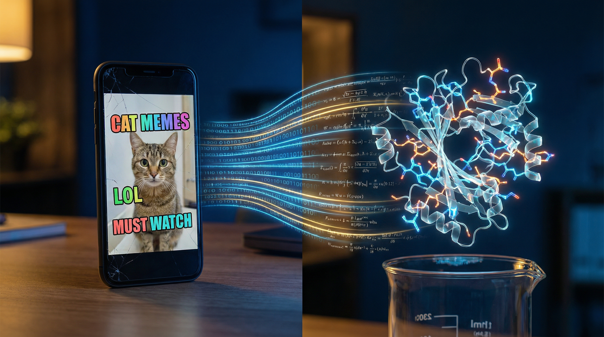

In 1962 John Glenn refused to board his rocket until Katherine Johnson
checked the numbers. She approximated his re-entry trajectory by hand,
one calculation per second, using Euler's method. It saved his life.
Today we run that same math trillions of times per second, across
thousands of processors, on trillions of times more data. We have
built a universal approximator and a universal generator. Two new
tools for science and business.
Feed a model enough low-level data over time and something remarkable
happens. Pixels over time, and it learns physics, fluid motion,
emotion, cinema. Nucleotides over time, and it learns how proteins
fold, how genes express, how cancer progresses. The same architecture,
the same math, working across physics, biology, and creativity.

Differential equations did the same thing. Newton was wrong, but close
enough to build bridges and predict tides. We traded pen and paper for
calculus, and it gave us the modern world.
Now we're making that trade again. Calculus for compute. These models
approximate the observable universe with high-dimensional shapes. They
reason in probability spaces where every possibility has a geometry.
A healthy life is a path through the space of valid lives. The edges
are illness and death. A gorgeous video is a path through time, with
characters, places, things, and emotions. A drug binding to its
receptor is one shape fitting into another. The math doesn't know
which one it's solving. It just finds the path.
This is what a phase change looks like. Most leadership teams don't
yet understand what it means for their business. I scanned 3,338
public companies to find out who actually gets this. I pointed AI
agents at every earnings call, every 10-K, every press release, and
extracted 4,332 verified AI deployments. The gap between the companies
that understand this shift and the ones doing window dressing is
enormous.

AI Radar. 3,338 companies. 4,332 use cases. Extracted by AI agents.
- Move to the Edge AI is eating the middle of every job. The value is moving to the people closest to the work and the machines doing it. Everything in between gets compressed.
- Watts, Tokens & Money Value flows downward in the AI economy. Energy wins. Pure software loses. The companies that control watts and silicon will own the next decade.
- Window Dressing vs. Core Most AI deployments optimize the wrong thing. They automate the periphery and leave the core business untouched.
Copernicus wrote down the position of the sun and moon every day. Not
to publish. To see. The data told him we weren't the center of the
universe.
I'm doing the same thing with AI. Every day I document one deployment
that moved a number. A short-form video. One data point. I started
with the hyperscalers and ran out after a few hundred. So I built
the AI Radar to find more, pointed agents at 3,338 public companies,
and discovered thousands of deployments already in production. It
blew my mind.
Now I document the most interesting and impactful examples daily,
looking for the patterns. Hundreds of data points so far. Thousands
to come.
AI Money Moves is the daily log. One AI deployment, one number, one video. The weekly
newsletter
pulls back and connects the dots.
About


I've been in the room for four of these shifts. I advised Lou Gerstner
as IBM bet the company on the internet. That work grew into a $15B
business. I was Chief Technology Advisor to Bob Moritz as PwC moved
6,000 partners and 160 territories to cloud. I built Google Cloud's AI
business from NASA
to healthcare to genomics, growing it into one of
Cloud's fastest segments. Now at Alphabet I work on generative AI,
where the same pattern is playing out in content and advertising.
Every time, I go hands-on first. I learn the technology deeply,
figure out where it's headed, and bring what I find to CEOs and
boards. That's what I do.
Alphabet (current)
Advises leadership on generative AI, content, and advertising.
Google Cloud
Founded Applied AI. NASA, healthcare, genomics. Multi-billion-dollar business.
PwC
Chief Technology Advisor to CEO Bob Moritz. Global cloud transformation.
Stanford Medicine
Tumor board and pharmacogenomics advisor.
Lustgarten
Board member. Pancreatic cancer research.
Marconi Foundation
Advisory board.
Photobucket
Scaled platform to 50M users. Acquired for $300M.
IBM
Advised CEO Lou Gerstner. Internet infrastructure. $15B impact.